模块 A：电子表格上的布朗运动教程（Brownian Motion on a Spreadsheet, a Tutorial）
导读：本模块要解决的问题
这是 Part IV"模块"的第一篇，性质是教程：在 Excel 上一步步搭出几何布朗运动，再扩到二资产、三资产，把相关性的几何直觉建立起来。对一个已经能写出随机微分方程、推过 Itô 引理、做过 Cholesky 分解的读者，逐格敲公式的部分是复习，本模块真正值得停下来想的，是 Taleb 在教程里顺手埋下的四个理论锚点：
- 把"等步长的醉汉"过渡到"非等步长的 "，靠的是中心极限定理（最简形式 DeMoivre-Laplace）。 的二项游走在步数增大时收敛到钟形。
- 标准差为什么是时间的平方根。因为每步方差相加、增量独立，方差线性可加而标准差走 。
- 扩散过程为什么处处连续却处处不可导。这背后是 这条随机微积分的核心规则，它直接决定了 BSM 框架下"再频繁对冲也降不掉期权成本"。
- 二资产、三资产游走如何用协方差矩阵的 Cholesky 分解一次生成相关收益。同心圆、椭球、退化到直线，都是相关性矩阵秩与形状的几何显示。
布朗运动被拆成两块：
本模块只管随机部分，drift 留给 Module B。笔记沿原文顺序展开：经典单资产游走、两个问题（CLT 与 ）、扩散的本质、二资产与相关性、三资产扩展。
一、经典单资产随机游走
随机游走（random walk）说的是：证券价格在某段时间内的价格变动中，有一部分是随机的；不预期为随机的那部分叫漂移（drift）。为效率起见，假设金融工具遵循一个随机过程。
Taleb 用麦迪逊大道上的醉汉打比方。烂醉的人对自己刚才在哪毫无记忆（无记忆性），只能向前走、步速恒定，每一步要么"前进 + 左"、要么"前进 + 右"（图 A.1）。走 10 步后，从"10 前 + 10 左"到"10 前 + 10 右"，中间所有组合都可能。
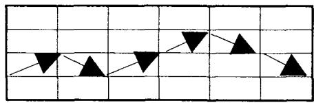
证券市场被假设遵循类似的游走，只有一处不同：步长随资产价格大小而增大。这正是几何布朗运动相对算术布朗运动的关键，价格变动按比例而非按绝对量发生。
在 Excel 上搭出来
教程的操作（作为复习记录）：生成 248 个均值 0、标准差 1 的正态随机数放进 B4 起的列；A3 放初始价 100，A2 放波动率 0.157。这里 248 天的年化标准差是 ，即 248 个交易日、日波动率约 1%。A4 填入
对应到单元格：A4，A3，，， 是均值 0 的随机数。向下复制到 A251，得到一条日收益路径。选 A3:A251 作图，就得到图 A.2 的几何布朗运动。重新生成一批"白噪声"会画出新路径；加大波动率会放大波动幅度。
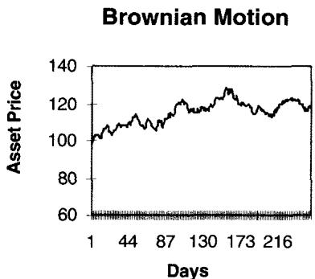
理论映射：那个 项是 Itô 修正
对这位读者，公式里唯一需要点一句的是漂移里的 。它是 Itô 引理作用在 上的产物，并非随手加的一个折扣项。若 （无真实 drift），则
那个 正是凸函数 与 Jensen 不等式带来的凸性修正，保证 （鞅性）。电子表格里把它写进指数，就是为了让模拟出来的几何布朗运动期望不漂移、方差由 单独控制。
二、两个问题：CLT 与平方根时间
问题 1：等步长的醉汉如何变成非等步长的
读者必问的问题：醉汉每步等长， 却能取 0.56、1.03 这种 间的任意值，二者怎么衔接？
答案在概率定律的核心：把时间切成无穷小的片段（比如 秒），每片只发生数字化的 或 。1 秒由 10 步组成，这些移动之和均值为 0、散布在 到 之间。若 来自"公平"的随机数发生器，1 秒移动的直方图会呈现清晰的钟形。在表格里建一棵树，上枝 、下枝 ，会有 1024 条样本路径通向 11 个可能结果（10 步后结果只能是偶数）。最终比例见表 A.1，画出来是图 A.3：
| 上涨 | 下跌 | 净移动 | 出现次数 |
|---|---|---|---|
| 10 | 0 | 10 | 1 |
| 9 | 1 | 8 | 10 |
| 8 | 2 | 6 | 45 |
| 7 | 3 | 4 | 120 |
| 6 | 4 | 2 | 210 |
| 5 | 5 | 0 | 252 |
| 4 | 6 | -2 | 210 |
| 3 | 7 | -4 | 120 |
| 2 | 8 | -6 | 45 |
| 1 | 9 | -8 | 10 |
| 0 | 10 | -10 | 1 |
| 合计 | 1024 |
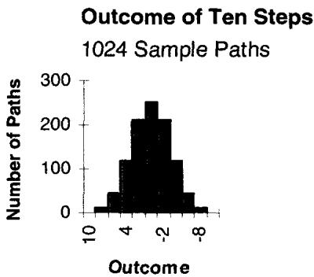
这是中心极限定理的一个启发式推导（最简形式即 DeMoivre-Laplace）。 随机步之和，随观测数增加趋向图 A.3 的钟形分布。一个表面上的约束是步长必须始终相同。Taleb 点了一句很值得玩味的话：这条定律在这个语境下最好懂，却也许是数学史上被误解最多的定律。
理论映射：CLT 的适用边界正是 Taleb 全书的靶子
为什么说它被误解最多？因为 DeMoivre-Laplace 收敛依赖步长有限方差、增量独立同分布。一旦真实市场的步长本身是随机的、带厚尾、带跳跃（方差无穷或时变），高斯极限就不再成立，收敛会极慢甚至失效。这恰是 Taleb 后来在第 15 章、以及整个职业生涯反复敲打的主题。教程在这里只是埋了个伏笔：钟形是"等步长、独立、有限方差"三个假设的产物，三者任一破裂，正态近似就要打折。
问题 2：标准差为什么是时间的平方根
前面假设 分布每步是一个时间单位。标准差是各步移动平方和的平方根。这里每步平方都是 ，且均值 ，于是
由于所有 ，而时间 等于步数 ，得 。所以二元 游走的标准差等于步数的平方根。本例标准差为 ，约三分之二的路径落在 与 之间。
理论映射： 来自方差可加，而方差可加来自独立增量
把推导抽象一层：独立增量下方差线性可加，，所以标准差走 。"约三分之二落在 标准差内"就是正态的 68% 法则。这条 法则是波动率年化、期权定价里 的根。但它的成立前提同样是增量独立，第 22、23 章讨论的 variance ratio、均值回复、异方差，本质都是在检验"方差是否真的与时间线性成比例"。一旦不成立，用日波动率乘 去推长期波动率就会系统性出错。
三、Option Wizard：扩散过程
电子表格上的随机游走演示的是一个扩散过程（diffusion）。
扩散的主要性质是：无论时间切得多细，函数始终是锯齿状的。它在几何上永远像下面这条样本路径：
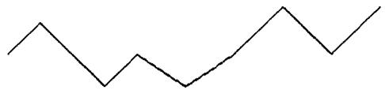
同一条样本路径用更频繁的观测看，是这样：
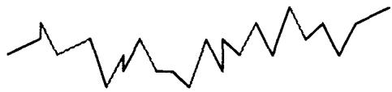
把时间切成更小的增量，也不会让任何一段变得更"圆滑"。它虽然连续，却处处不可导，且任何时候都不会变得可导。描述这种锯齿性的时髦词是"分形（fractal）"结构。
大学微积分通过泰勒方法教过：任何函数在很窄的一段里都能展开成含各阶导数的多项式：
微积分也教过，对时间 的函数 ，当分割变得很小，。但随机微积分的一条基本规则是：无论时间切得多小， 因其中的随机元素而不消失。事实上
理论映射：二次变差不为零，这就是 Itô 微积分与"对冲降不了成本"的根
这一节是整个模块对期权交易员最要紧的一句。普通（光滑）函数的二次变差为零，所以泰勒展开里二阶项 可丢。布朗运动不同，它的二次变差 不为零，写成微分记号就是 。这正是 Itô 引理多出那个二阶项的来源，也是 修正、乃至整个 BSM 定价的数学地基。
Taleb 把它翻译成交易语言：如果标的曲线在局部存在某种光滑性，那么只要对冲频率匹配那个增量，gamma 再平衡的"制造成本"就能降低。但 BSM 不允许这种事，即便交易员每十亿分之一秒再平衡一次，期权成本也不会下降。理由就在 ：再平衡赚的 gamma 收益与付的 theta，在每个时间尺度上都按 等比例出现，缩短间隔只是把同一笔租金切得更碎，总量不变。这是"持有凸性必须付租金、且租金不因勤快而减少"的最底层证明。
四、二资产随机游走：相关性的引入
单资产游走对应醉汉，二资产对应空间里的一只醉鸟。它的位置由高度和地图上的位置（南北、东西）决定，需要三条信息，所以在三维里考虑。二资产游走在电脑上很容易模拟，不需要很复杂的矩阵代数，难处在于要估三个参数：资产 A 的波动率、资产 B 的波动率、两者相关性。
用协方差矩阵 + Cholesky 生成相关收益
教程的做法（作为复习记录）：生成两列独立正态随机数。第一列资产 A 独立，第二列要通过相关性"桥接"到第一列。先命名单元格 Vol1、Vol2、Correl，再建 2×2 协方差矩阵：
然后用 Cholesky 分解这个矩阵：
再生成符合相关性矩阵的对数收益：
| 单元格 | A | B | C | D | E | F |
|---|---|---|---|---|---|---|
| 1 | Vol1 | 1 | Cov | Matrix | Cholesky | |
| 2 | Vol2 | 1 | 1 | 0 | 1 | |
| 3 | Correl | 0 | 0 | 1 | 0 | 1 |
当 时收益 B 完全独立于收益 A（此例 Correl=0）。
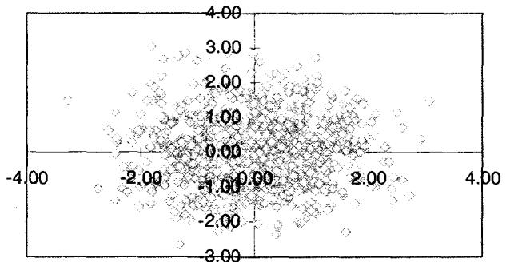
图 A.4 把成对收益画出来，呈现一个圆：中心点密度很高，向外递减。交易员看单资产分布是钟形曲线，看一对资产就要看成同心圆。
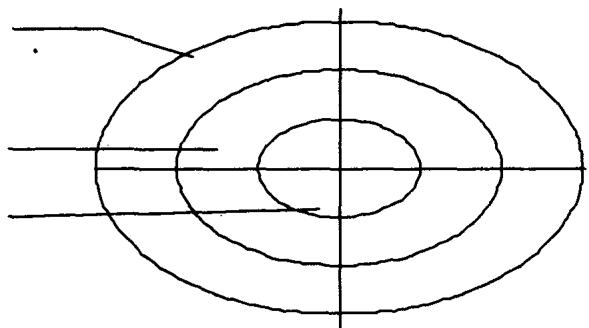
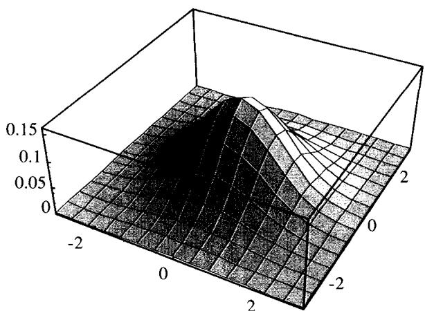
图 A.5、A.6 把这个二维钟形（联合正态密度）从俯视的同心圆翻成三维的钟形曲面。
理论映射：Cholesky 就是给独立噪声"染上"相关性的线性变换
这套表格操作的数学身份是：要生成协方差为 的相关高斯向量，取独立标准正态向量 ，做线性变换 ，其中 是 的 Cholesky 下三角因子。验证一行就够：。表格里的 正是 的三个非零元， 就是把一份 A 的噪声按相关性"掺"进 B。这与第 22 章墨西哥票据定价里 是同一个东西，那其实就是 2×2 单位波动率情形下 Cholesky 的第二行。
改变相关性：圆如何坍缩成线
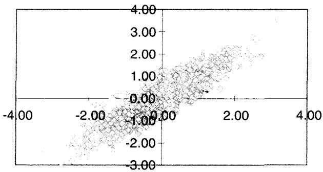
图 A.7 显示，相关性趋向 1 时，散点云向中心压缩、形成一条线；相关性趋向 时也形成一条线，只是收益大小相等、符号相反。
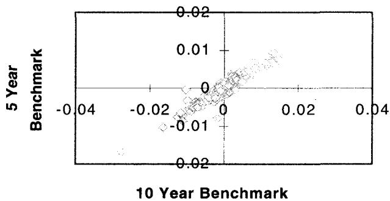
图 A.8 用 5 年和 10 年美债的真实数据，让读者把模拟和现实世界的高相关对照，散点确实挤成一条斜带。
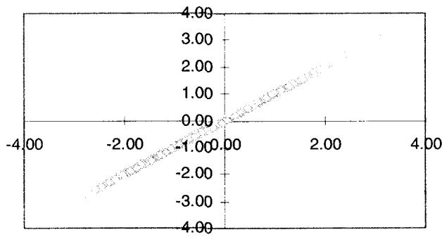
图 A.9 是相关性为 1 的结果，散点完全落在一条直线上。
理论映射：相关性是协方差椭圆的离心率，±1 时矩阵降秩
同心圆/椭圆坍缩成线，几何上就是联合正态等高线（椭圆）随 离心率趋于 1、短轴趋于 0。代数上， 时协方差矩阵行列式 ，矩阵降秩、退化，Cholesky 的 ，B 不再有独立于 A 的自由度。这就是第 22 章那句"相关性矩阵必须保持半正定、否则相当于负波动率"的几何对应： 会让短轴方差变负，椭圆翻转，不存在这样的分布。
要加第三个证券，过程相同：第三个收益对前两个的关系，类似第二个收益对第一个的关系（即 Cholesky 多加一行）。
五、扩展：三资产随机游走
二资产收益能表示后，三个不相关资产组合的终点到达可以看成一个球（图 A.10）。1 个标准差是小球、2 个标准差是更大的球，以此类推，取代了二维的同心圆。
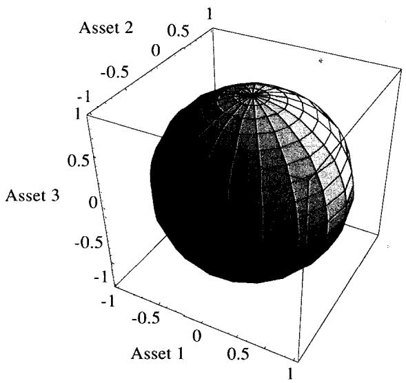
当其中一个资产没有波动率（称为"退化 degenerate"）时，问题退回二资产世界（图 A.11）。
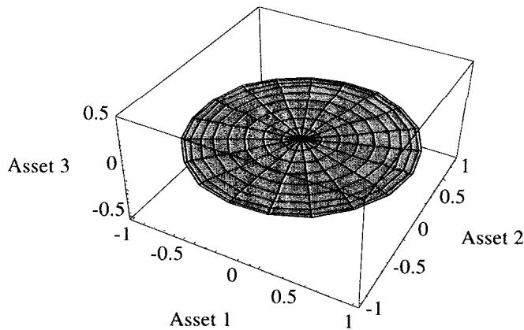
当其中两个资产完全相关（100%）时，结果也是一个二资产环境（图 A.12）。当三个资产都完全相关时，结果是一条线。
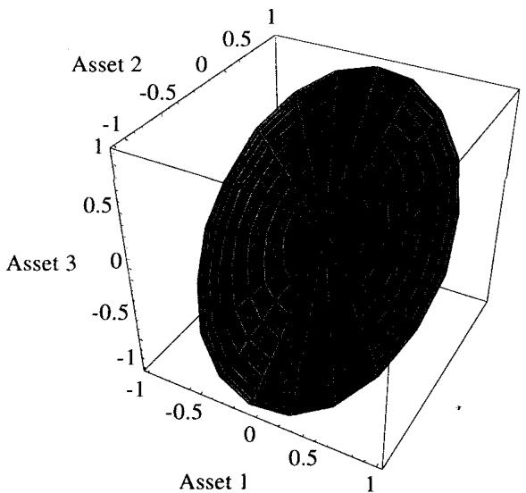
理论映射：椭球的形状就是协方差矩阵的谱
三资产的"1 标准差曲面"是联合正态的等高面，几何上是一个椭球 ，它的三条主轴方向是 的特征向量、轴长正比于特征值的平方根。这把前面所有图统一起来：球（ 各特征值相等、各资产独立同波动率）、椭球（特征值不等）、退化成圆盘或直线（某个特征值为零，即矩阵降秩）。一个资产"退化"对应一个零特征值，把椭球压扁成二维圆盘；两资产 100% 相关同样制造一个零特征值，效果一样；三资产全相关则只剩一个非零特征值，椭球压成一维线段。维数即矩阵的秩，相关性把高维椭球沿某些方向压平的程度，就是组合真实自由度的度量。这正是 bucketing 与组合风险管理里"有效风险维数"的几何来源。
六、本模块综述：理论与实务的对照
| Taleb 的教程命题 | 对应的理论命题 |
|---|---|
| 醉汉等步长 → 非等步长 | 中心极限定理（DeMoivre-Laplace），二项收敛到正态 |
| 钟形依赖"等步长"约束 | CLT 需独立、同分布、有限方差；厚尾/跳跃下失效 |
| 标准差是时间的平方根 | 独立增量下方差线性可加， |
| 公式里的 | Itô 引理作用于 的凸性修正，保鞅性 |
| 扩散处处连续却处处不可导 | 二次变差不为零， |
| 再频繁对冲也降不了期权成本 | gamma 收益与 theta 按 等比出现 |
| 用协方差矩阵 + Cholesky 生成相关收益 | ，， |
| 相关性趋 ±1 时圆坍缩成线 | ，矩阵降秩 |
| 三资产终点是球/椭球，退化为圆盘/线 | 等高面 ，主轴即特征向量，维数即秩 |
| （第22章） | 单位波动率下 Cholesky 的第二行 |
核心观点
第一，几何布朗运动是"对数收益独立同分布、方差按时间线性累积"这一组假设的产物。电子表格把这组假设变成可见的路径，钟形、、 都从这里长出来。
第二，扩散的不可导性是期权定价的地基，远非一个技术细节。 决定了二次变差不灭，决定了 Itô 修正，也决定了对冲租金不会因勤奋而消失。
第三，相关性的全部几何都装在协方差矩阵里。Cholesky 把独立噪声染上相关性，特征值/秩决定椭球的形状和组合的有效维数， 就是矩阵降秩、自由度坍缩。
第四，所有这些钟形与正态近似都带着前提。等步长、独立、有限方差三者支撑着 CLT 和 ，而 Taleb 全书的警觉正落在这三个前提何时破裂。
一句话收束
本模块最该记住的一句：电子表格上的布朗运动把三件事画给你看——钟形来自中心极限定理、 来自独立增量下的方差可加、相关性来自协方差矩阵的 Cholesky 分解；而扩散二次变差不灭这一条，才是期权制造成本无法靠勤快对冲压低的根本原因。